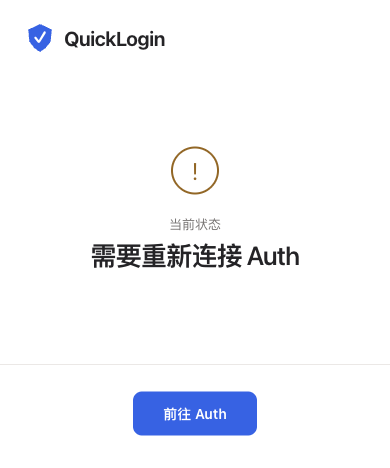

<!doctype html><html lang="zh-CN"><meta charset="utf-8"><title>QuickLogin 商店截图 · 授权恢复</title><style>
*{box-sizing:border-box}html,body{width:1280px;height:800px;margin:0;background:#f5f7fb;color:#20252e;font-family:-apple-system,BlinkMacSystemFont,"PingFang SC",sans-serif}main{height:800px;display:grid;grid-template-columns:1fr 430px;align-items:center;gap:50px;padding:80px 90px}.brand{font-size:26px;font-weight:600;color:#245ce0;margin-bottom:46px}.brand img{width:32px;height:32px;vertical-align:middle;margin-right:12px}h1{font-size:49px;line-height:1.3;letter-spacing:-1.8px;font-weight:600;margin:0 0 30px}p{font-size:22px;line-height:1.8;color:#626a77;margin:0}.screen{margin:0;padding:20px;background:white;border:1px solid #e1e5ec;border-radius:18px;box-shadow:0 18px 50px #2530470b}.screen img{width:390px;height:468px;display:block}.screen figcaption{font-size:14px;color:#707887;text-align:center;padding-top:16px}footer{position:absolute;left:90px;bottom:45px;font-size:14px;color:#707887}</style><main><section><div class="brand">CQU 快捷登录</div><h1>授权失效？<br>重新连接当前设备。</h1><p>查看浏览器状态，<br>按提示回到 Auth 恢复授权。</p></section><figure class="screen"><figcaption>扩展实际界面 · v0.4.3</figcaption></figure></main><footer>需要 Auth 账号及 QuickLogin 使用资格 · 由 CQU.MOE 提供 · 非学校官方产品</footer></html>
